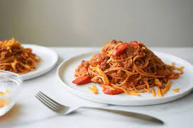

Filipino Spaghetti

Filipino spaghetti sauce noodles, and hot dog bits in a pot ready to plate.
Sorry to all the traditional pasta lovers, but Filipino's adds sugar and banana ketchup to their spaghetti. This is what makes it so unique and delicious though, along with the hot dogs, cheese, and fish sauce. These ingredients may sound bizarre, but they sure piece together what seems to be a perfect blend of flavors. This dish was due to American colonization in the Philippines in the late 1800s. During World War II, General MacArthur ate a Japanese spaghetti neapolitan which uses ketchup as an ingredient. When he traveled to the Philippines, his staff changed the recipe to include banana ketchup and other ingredients which created the Filipino spaghetti.
Ingredients for the Amazing Filipino Spaghetti
Sauce
- 1 tbsp vegetable oil
- 1 chopped medium yellow onion
- 5 minced cloves of garlic
- 1 lb ground pork
- 16 fl oz canned tomato sauce
- 4 fl oz banana ketchup
- 1 tbsp dark brown sugar
- 1/2 tbsp fish sauce
- 5 sliced hot dogs
- 1/4 tsp black pepper
- 1/4 tsp salt
Spaghetti
- 1 lb dried spaghetti
- 10 c filtered water to boil spaghetti
- 2 tsp salt
Optional Topping
- Velveeta or cheddar cheese
Instructions
Filipino Spaghetti Sauce
- In a large pan over medium heat, add the vegetable oil and the onion. Saute the onion for 3-5 minutes or until translucent.
- Add the garlic and saute until fragrant or about 30 seconds.
- Add the ground pork and cook for about 5-7 minutes or until the meat is completely browned.
- Add the tomato sauce, banana ketchup, fish sauce, and the dark brown sugar and stir until combined with the meat mixture. Bring the mixture to a boil and then lower to medium low heat and continue to cook for 5 minutes to slightly thicken the sauce.
- Add the hot dogs and continue to cook for another 5 minutes.
- Taste test the sauce and add salt and black pepper, adjust to your preference.
- You can top with the cheese, but this is optional.
- Add your noodles on a plate and ladle the sauce on top. Enjoy!
Spaghetti Noodles
- In a large pot, add the water and bring to a boil over medium high heat. Add the salt and stir until dissolved. Add the dried spaghetti and follow instructions on the box to cook. This could take anywhere between 8-15 minutes depending on the pasta brand.
- Test your spaghetti by tasting one strand, it should be cooked throughout without any opaqueness in the center, but still slightly firm.
- Strain the pasta from the boiling water, reserving some of this water in case you need it to thin the sauce, and set the pasta aside. Do not rinse the pasta.
Return to Top